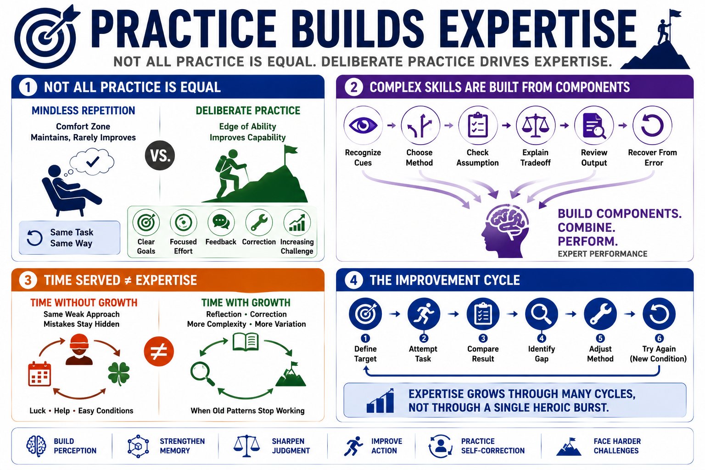

Deliberate Practice and Skill Development
Connecting to LMS... Progress: in progress

Narration
Practice is necessary for expertise, but not all practice has the same value. Repeating a comfortable task can maintain familiarity without building much new capability. Deliberate practice is more focused. It uses clear goals, concentrated effort, feedback, correction, and increasing challenge. It asks the learner to work at the edge of current ability, where improvement is possible but mistakes are still visible.
Complex skills often need to be broken into components. A skilled analyst, engineer, operator, or manager performs many small judgments that are easy to miss from the outside. Training can isolate those components: recognizing cues, choosing a method, checking an assumption, explaining a tradeoff, reviewing an output, or recovering from an error. Once the components improve, they can be recombined into more realistic performance.
Time served does not automatically produce expertise. Someone can repeat the same weak approach for years if the environment never provides clear feedback or if mistakes are hidden by luck, team support, or forgiving conditions. Experience becomes more valuable when it includes reflection, correction, increasing complexity, and enough variation to teach when the old pattern no longer applies.
A useful improvement cycle is simple to describe, even when it takes discipline to execute. Define the target performance. Attempt the task. Compare the result against a stronger standard. Identify the gap. Adjust the method. Try again under a slightly different condition. Expertise grows through many cycles like this, not through a single heroic burst of effort.